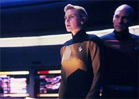
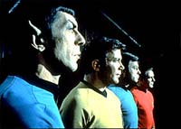
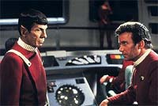
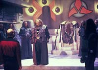
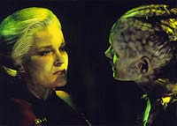
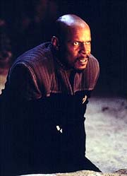
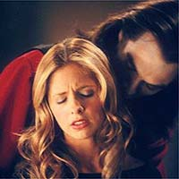

|
por Luiz
Castanheira
Um dos tpicos que mais
aparece em discusses entre os fs o da "continuidade no
universo de Jornada nas Estrelas". Sempre tem algum
colega, no mundo real ou no virtual, que mantm que uma
determinada fala ou um determinado desenvolvimento em um dado
segmento de Jornada, "viola a continuidade
estabelecida do franchise". Tal ocorrncia to comum que
serve mesmo para dividir os fs em "faces", por
suas posies com relao ao assunto.
Temos, por exemplo: os "radicalmente contrrios", que,
frente a qualquer possibilidade (ainda que remota ou mesmo no
muito fundamentada) de contradio com o que foi estabelecido
anteriormente, invocam frases de efeito como "o Grande Pssaro
da Galxia, Gene Roddenberry, deve estar rolando no tmulo com
isto"; os "radicalmente a favor", que assumem que o
universo de Jornada 100% consistente internamente e que
tentam de toda a forma racionalizar e explicar TODO potencial erro
de continuidade; e os "moderados", que entendem que
erros acontecem e podem se alinhar, em termos de opinio quanto a
um ponto especfico, com o primeiro ou com o segundo grupo, sem
exageros.
Um aspecto que merece ateno o de que
"continuidade" se refere a um bom nmero de diferentes
aspectos da produo de uma srie de TV. Fato que s vezes se
perde em tais discusses, e leva a uma dificuldade em estabelecer
um ponto comum de referncia. Vamos ento oferecer uma pequena
classificao (que no tem o objetivo de ser completa) que ser
adequada ao tratamento dado no presente artigo.
Tipos de "continuidade"
1- Na produo de um nico episdio
Uma coisa importante ressaltar que, para maximizao dos
recursos da produo, normalmente as cenas dos episdios so
filmadas fora da ordem em que elas esto no roteiro e em dias
diferentes (isto sem falar que mltiplos episdios entram em
produo ao mesmo tempo --aumentando ainda mais o nvel de
complexidade do trabalho da equipe de produo, contando com
itens como coordenao de espaos fsicos que servem para mltiplos
cenrios, viagens para filmar externas, disponibilidade de atores
etc.). Algo ainda mais importante considerar que cada cena
filmada vrias vezes (mltiplas tomadas) e em mltiplos ngulos,
sendo as cenas montadas corretamente apenas na fase de ps-produo
do episdio.
tarefa do continuista (que no necessariamente uma figura
da parte de criao da srie) zelar para que os penteados,
vesturios, maquiagens, peas de moblia, cenrios etc.
estejam consistentes em cada tomada. tarefa do editor zelar
para que todas estas mltiplas fontes de cenas se integrem de
maneira suave e consistente no produto final a ser exibido. Um
erro de continuidade deste tipo normalmente no causa maiores reaes
nos fs. Este um tipo que mais facilmente aceito como
"um problema da vida real" do que os demais.
 Um
exemplo de erro desse grupo o da cena final do clssico "Yesterday's
Enterprise" (da terceira temporada de A Nova Gerao),
onde La Forge aparece com o colarinho do uniforme da Frota Estelar
do "universo alternativo" visto no curso do episdio.
Em termos de erros de edio, um grave e tpico a existncia
de um problema de "matching", que ocorre quando as
vistas de uma cena "no batem". Por exemplo, imaginem o
seguinte: um dilogo em um restaurante com dois atores sentados a
uma mesma mesa; posicionamos a cmera atrs do ator A, pegando,
por sobre o ombro do ator A, a face do ator B, durante todo o dilogo;
depois fazemos o contrrio. O erro pode se apresentar se em uma
vista o ator A levanta um brao para beber e na outra ele levanta
o outro brao --sendo esse claramente um erro grosseiro em uma
situao extremamente simplificada). Existem inmeros outros
erros desse tipo 1 nestes mais de 35 anos de Jornada.
Ainda que no um problema de continuidade, rescritas sucessivas
em roteiros e o incio das filmagens sem um roteiro pronto
costumam levar a segmentos "pouco memorveis", para
dizer o mnimo. O curioso que tais problemas, aps o episdio
pronto, podem ser confundidos, por alguns fs, com problemas de
continuidade deste primeiro grupo (porque d um ar mal acabado e
desconjuntado ao produto final).
2- Com relao aos personagens
O mnimo que se pode esperar de um personagem um bem
estabelecido padro de comportamento (a existncia de
"personagens esquizofrnicos" o mais grave problema
de continuidade com relao aos personagens), um adequado nvel
de complexidade (com relao a sua personalidade) e utilidade
(funo ou importncia) no contexto da srie.
Entretanto, devemos lembrar que, ainda que um dado personagem
tenha uma consistncia em suas decises, elas ainda assim devem
conseguir surpreender a audincia de tempos em tempos (se este
cuidado no for tomado, o personagem acaba soando, ao longo do
tempo, como de "uma nota s").
Uma parte importante que a continuidade com relao aos
personagens desempenha em sua caracterizao e desenvolvimento
a possibilidade de um personagem "fazer escolhas difceis
e lidar com as conseqncias de tais escolhas". Uma condio
aparentemente trivial (e bastante difcil na prtica dos
roteiristas) que crucial para o real desenvolvimento de
qualquer personagem.
Uma boa continuidade permite que algumas das seguintes caractersticas,
desejveis em um personagem com relao a sua complexidade,
possam ser completamente realizveis. So elas: ter um objetivo
(ou uma procura) claro alm das suas atividades do dia a dia; ter
um ngulo trgico; ter uma "faceta misteriosa ou
sombria" que possa ser explorada ("no ser exatamente o
que parece ser"); possuir um constante dilema pessoal;
percorrer um caminho de transformao (ou de redeno) etc.
Assinaturas pessoais e demais texturas tambm so bem-vindas.
Outra armadilha a ser evitada o fato de que, ainda que a falta
de uma real funo possa "matar" um personagem, esta
"funo" nunca deve passar a defini-lo, o que acaba,
quando assim acontece, dando origem aos "personagens-ferramenta".
3- Com relao a uma "histria global para a srie"
importante a capacidade de uma srie de manter um arco de histria
sobre uma seqncia de episdios que possa englobar at uma ou
mais temporadas inteiras, ou mesmo toda a srie. Observem que tal
formato no exclui a possibilidade de termos episdios
essencialmente isolados, que possam ser plenamente apreciados por
uma audincia "no-iniciada" na mitologia da srie, e
que ainda assim possam oferecer uma contribuio individual
(possivelmente pequena) para o arco global.
Notem que o termo "arco", como utilizado aqui, est
intimamente associado ao conceito de propsito e objetivo. Digo
isto, por que muitas pessoas ouvem o termo "arco" e
imaginam uma seqncia interminvel de episdios, todos comeando
com uma "recapitulao" e terminando com um "to
be continued", o que, ainda que esteja correto, acaba no
sendo o caso na maioria das vezes que o termo "arco"
usado.
Um nmero de timos episdios com um propsito acabam valendo
mais em qualidade que a mera soma de suas qualidades julgadas
separadamente. Entretanto, no me entendam mal, os episdios tem
de ser timos e com propsito para o "arco" fazer
sentido, ao menos em um caso ideal (uma sucesso qualquer de episdios,
s porque esto conectados contando uma nica histria, no
automaticamente "vencedora"). O caminho tem de ser
planejado com competncia e tem de ser percorrido com competncia
(pelos roteiristas) episdio a episdio.
Sintetizando:
- Bons episdios com um propsito definido: o caso ideal;
- Bons episdios sem um propsito definido: algo positivo est
acontecendo, mas existe potencial sendo desperdiado;
- Maus episdios com um propsito definido: existe um caminho
bem definido, mas falta competncia em trilhar tal caminho;
- Maus episdios sem um propsito definido: perda total.
Outro ponto importante que uma continuidade total com relao
aos personagens no implica necessariamente a existncia de um
arco global de histria (de fato, boa parte do drama televisivo
da atualidade estruturada assim --normalmente temos uma histria
"local" que surge e resolvida na durao de cada
episdio, enquanto as histrias pessoais dos personagens se
desenvolvem sobre as fronteiras dos episdios e das temporadas).
Por outro lado, a existncia de uma histria global exige, sim,
uma grande continuidade com relao aos personagens.
Ao final desta coluna estaremos discutindo diferentes implementaes
de arcos globais de histria.
4- "Continuidade de rodap"
aquela baseada em referncias (por vezes at obscuras e
normalmente corretas e benignas) a eventos passados: um nome, uma
data ou um local (normalmente no servindo a nenhum propsito
dramtico --apenas uma literal "nota de rodap"). Por
vezes chegam a ser "exemplos fracos" do tipo 2 e do tipo
3, mas acredito que devam ser tratadas a parte, neste grupo
"menos nobre".
Aqui vai uma questo, ou, como queiram, um adicional item de
classificao, que propositalmente deixei de fora da classificao
principal, por saber que cada ponto de tal discusso levaria a um
artigo do tamanho deste ( s lembrar da infame questo da
"Testa Klingon").
Os grupos de 1 a 3 cobrem o mais importante para a continuidade de
uma dada srie (e so sempre o meu foco principal quando emito
as minhas opinies). Entretanto, Jornada tem um problema
adicional de continuidade, que a leva alm das fronteiras de uma
nica srie (o que implica diferentes pessoas, pocas,
objetivos, demandas etc. envolvidos na manuteno da
continuidade). Esta talvez seja a questo que traz mais polmica,
pois a ns temos uma srie (potencialmente) reescrevendo a
histria de outra (algo imperdovel para a maioria dos fs).
especialmente complexa a discusso quando a srie que est
sendo "rescrita" a Srie Clssica. Se por um
lado a Clssica a origem de todo o franchise (e tratada
quase como um evangelho neste sentido), ela nunca foi escrita para
servir de alicerce para uma histria de mais de 35 anos.
Entendam, a Clssica foi sempre escrita de uma forma
bastante vaga quanto ao universo da srie e por vezes
extremamente restritiva para um dado episdio funcionar em seus
termos (outra herana criativa da Clssica e identificada
por boa parte do pblico).
Que leva a questes como "na Clssica no dito
nada disto" (e normalmente no tem nada que diga o contrrio)
e "mas a Clssica diz o contrrio" (quando na
realidade o original faz menos sentido que a alternativa). Um
problema adicional que nos anos 70 uma grande quantidade de
literatura no-oficial foi publicada, de certa forma expandindo o
universo de Jornada. Certos
elementos de tal literatura se tornaram populares, levando a
alguns fs a acreditar nela como oficial e negar eventos
posteriores e ocorridos em tela (sendo ento cannicos), em
detrimento de tais escritos setentistas (algum se lembra dos
"poderes congelantes dos Andorianos"?).
Estabelecido o conceito de continuidade, vamos falar (de forma bem
resumida) como ele foi tratado ao longo da histria de Jornada
nas Estrelas.
Continuidade ao longo das sries de Jornada
 A
Srie Clssica de Jornada foi uma evoluo em
relao s sries Sci-Fi televisivas de qualidade anteriores
como "The Twilight Zone" e "The Outer Limits",
por introduzir um elenco regular de personagens em um cenrio
fixo. Apesar de alguns deslizes (especialmente no comeo), a
caracterizao cristalina de seus personagens mostrou-se um
extremo sucesso popular (este sem dvida o principal motivo
por estarmos aqui hoje falando sobre Jornada mais de 35
anos aps a sua estria). fcil identificar as caractersticas
fundamentais de bons personagens na Srie Clssica de Jornada:
padro de comportamento, assinaturas pessoais bem definidas e uma
clara importncia para o funcionamento da srie. Caractersticas
mantidas (na maioria das vezes) ao longo do tempo.
Entretanto, o formato completamente isolado de seus episdios
sempre impediu (por construo e opo dos responsveis) o
estabelecimento de arcos de histria e real desenvolvimento dos
personagens (por favor, no confundam os atores e roteiristas
"achando" os personagens com real desenvolvimento, como
discutido acima). O status quo tinha de ser restabelecido
necessariamente ao final de cada episdio. O nvel de
continuidade apresentado extremamente pequeno, mas, se
procurarmos com cuidado, existem algumas referncias entre episdios,
sim.
Esta "herana" da Srie Clssica (episdios
completamente isolados, uma virtual ausncia de desenvolvimento
dos personagens e muitas vezes o uso de "artifcios"
para preservar e restaurar o status quo" ao final de cada
episdio) o que boa parte do pblico (especialmente o mais
leigo) reconhece como o "estilo de Jornada". Tal
"herana" constitui a base para todos os futuros episdios
de Jornada at os dias de hoje.
Felizmente, tal frmula foi mais do que desafiada ao longo dos
anos, embora ainda perdure como referncia bsica. O motivo
principal no artstico, financeiro. A histria conta que
sries com grande continuidade de histria no se saem bem nas
reprises em syndication (cinco vezes por semana). Por isso os
executivos da Paramount no gostam muito de continuidade nas sries
de Jornada. Para falar a verdade, um dos fatores que
possibilitou a popularizao da Srie Clssica (quando
reprisado at a exausto em syndication) foi justamente o
formato completamente independente de seus episdios.
O curioso que foi justamente a tripulao de Kirk, antes de
mesmo existir A Nova Gerao, que fez grande uso de
continuidade (claramente admitindo que havia, sim, um potencial
sendo perdido com segmentos completamente isolados). Os filmes II,
III e IV contam essencialmente uma nica histria contnua, e o
filme VI fecha a histria da tripulao original fornecendo um
"payoff" final para os seus personagens (pena que no
meio tnhamos de ter o quinto filme, o verdadeiro ANTIFILME de Jornada).
 No
tenho dvidas que muitos fs consideram os melhores momentos dos
personagens da Clssica ocorrendo no cinema (podem fazer
um teste listando os seus dez momentos favoritos dos personagens
da Srie Clssica e verificando a porcentagem deles que
ocorre nos filmes de cinema), devido a essa possibilidade de
realmente desenvolver os personagens.
A srie A Nova Gerao apresenta, de uma forma geral,
muito mais continuidade do que a Srie Clssica. J na
primeira temporada temos um desenho de arco, envolvendo uma enorme
conspirao no comando da Frota, em "Coming
of Age" e "Conspiracy".
Se no tivssemos a j famosa grave de roteiristas americanos
que ocorreu na poca, ns teramos os Borgs como uma raa
insetide que receberia a mensagem do final de "Conspiracy",
que tambm estaria envolvida nos incidentes na borda da Zona
Neutra em "The
Neutral Zone" e j apareceria em grande estilo bem
no comeo da segunda temporada.
 Entretanto,
o grande arco de episdios da srie (e o de fato produzido)
aquele que leva a uma guerra civil dentro do Imprio Klingon. O
grosso da continuidade da srie determinado por episdios
associados com acontecimentos ou temas de episdios anteriores e
pela slida caracterizao dos personagens, com destaque para
Picard e Data.
A srie Voyager teve algumas tentativas maiores de
serializao no comeo, especialmente na segunda temporada com
os Kazons (com resultados bastante ruins, devo acrescentar --principalmente
pelo fato de esta raa vil ser pouco original e interessante e
pela srie no oferecer nenhuma desculpa convincente para tal
arco poder ser sustentado; ou ser que o quadrante Delta faz
curva e no me avisaram nada?), mas a partir da se tornou
tipicamente episdica.
 Os
fatores que deram a Voyager a alcunha de srie com menor
continuidade de todo o franchise de Jornada nas Estrelas
(apesar de, paradoxalmente, eu j ter estabelecido que a Srie
Clssica tem virtualmente nenhuma continuidade) so os
seguintes: a srie mudou de responsveis vezes demais (Piller/Taylor,
Taylor, Piller/Taylor, Taylor, Taylor/Braga, Braga, Braga/Biller e
Biller), apenas com Berman presente sempre; a caracterizao dos
personagens (um dos pilares da continuidade de uma srie de TV) no
foi muito estvel ao longo do tempo, especialmente no caso de
Janeway, para dizer o mnimo; acenar com possveis
desenvolvimentos futuros e praticamente nunca fornecer tais "payoffs"
(o que acabou sendo interpretado pelos fs ao longo do tempo
simplesmente como m f dos roteiristas) e a dificuldade de
lidar com a sua prpria premissa original (uma nave sozinha,
longe de casa, rumando continuamente para a Terra).
(Existem at bons exemplos de continuidade em Voyager, mas
eles so inapelavelmente nocauteados pelos motivos acima
citados.)
A srie Enterprise acena com um potencial para serializao
e mesmo at j deslanchou alguns arcos de histria. Entretanto
um melhor julgamento fica guardado para o futuro (ainda est
muito cedo para termos certeza de alguma coisa).
Ento vamos falar de como contar histrias.
Trs diferentes estilos de se escrever "arcos globais de
histria"
1- Arco (no planejado antecipadamente) por toda a srie
(exemplo: Deep Space Nine)
 DS9
se qualifica pelo fato de o "arco do Emissrio" se
iniciar no primeiro episdio e terminar no ltimo, ainda que o
principal arco da srie (em tempo de tela) seja aquele envolvendo
o continuado conflito (em diferentes escalas ao longo da srie)
entre a Federao e o Dominion.
O grande defeito deste formato que nem tudo (para dizer o mnimo!)
vai se encaixar quando a srie olhada como um todo.
Entretanto, a histria tende a se desenvolver de uma forma mais
natural do que se ela fosse completamente planejada desde o incio.
Em um caso ideal, devemos construir slidos episdios, sobre slidos
episdios anteriores; introduzir arcos secundrios que se
resolvem e se renovam com o tempo e, quando o arco principal
entrar em foco, ele deve permanecer em foco at o fim da srie. DS9
soube se conduzir assim de uma forma geral, mas deu
"algumas" bobeadas.
2- Arco (planejado antecipadamente) por toda a srie (exemplo:
"Babylon 5")
Este
formato, de uma virtual "minissrie expandida", o
mais complexo possvel e parece talhado exclusivamente para
canais a cabo. surpreendente que B5 tenha sobrevivido por
quatro temporadas em syndication (at na quinta e ltima passar
para a TNT). Vou apenas salientar um ponto de tal complexidade,
que eu acho bastante importante. No somente temos de ter a histria
de antemo, mas tambm temos que ter um plano de contingncia
se (por exemplo) um ator deixar a srie. Temos que ter um
"personagem de reserva" que deve ser capaz de carregar
total ou parcialmente o arco de histria do personagem original,
e temos que ter uma idia do impacto que tal mudana vai ter no
restante dos arcos de histria da srie, algo bastante
complicado.
A maior virtude de tal formato que (a menos de eventos do mundo
real) os elementos de histria realmente se encaixam (ainda que
as coisas no possam se encaixar "bem demais", o que
acaba parecendo um pouco artificial e manufaturado --acho que
temos um ajuste delicado e importante a ser feito neste ponto).
Outra coisa que os arcos no podem ser to longos assim, como
em "B5" (se a parte da "construo" do arco
grande demais, voc pode perder espectadores que ficam
frustrados por falta de um "payoff" e pode frustrar
mesmo os espectadores que ficam esperando at o momento do "payoff",
pois eles esperaram tanto que no tem "payoff"
suficientemente bom que possa satisfaz-los).
Acho que a melhor soluo ter um arco global, de certa forma
distante e pouco referido (ainda que possa receber pistas de
tempos e tempos) e vrios arcos secundrios que se renovam e se
resolvem de uma em uma temporada (por exemplo). Quando a gente
entrar realmente no arco principal da srie, ai p embaixo at
o final. O arco principal tem de se fechar o mais prximo possvel
do final da srie (ainda que alguns episdios, servindo de eplogo,
sejam bastante bem-vindos).
3- Um arco (planejado antecipadamente) completo e diferente
para cada temporada (exemplo: "Buffy: The Vampire Slayer")
 Este
formato tem inmeras vantagens e bem prximo do ideal
(comercialmente falando inclusive) e funciona bem para uma srie
de rede. A srie se reinventa toda temporada, permitindo atrair
novos espectadores para o que , em ltima instncia, uma histria
do tamanho de uma temporada de cada vez. O formato permite trazer
novos personagens para o arco da temporada, que so novos para a
srie e para um espectador novato. A perspectiva de tais
personagens novos pode esclarecer os personagens regulares para
uma nova audincia de uma forma transparente e no-intrusiva
(mudanas no elenco regular podem ser feitas de forma bastante
natural tambm).
A complexidade de histria e problemas logsticos tambm so
grandemente reduzidos, com relao a um arco que dure toda a srie,
pois estamos lidando com uma temporada de cada vez. Com os pontos
principais da histria na mo, podemos deixar pistas "de
leve" em episdios literalmente isolados e podemos ter
certeza de uma "acelerada" com um grande "payoff"
ao final de cada temporada.
O grande perigo tornar as histrias das temporadas parecidas
demais entre si (salvar o universo uma vez por ano com tramas
sempre do tipo "tudo, mais a pia da cozinha"
"meio" esquisito) e no conseguir um "algo
mais" na derradeira temporada da srie. Entretanto, no se
enganem. Temos uma histria por temporada, mas temos que ter uma
base que se estenda por toda a srie e que tem que ser muito bem
cuidada tambm.
Continuidade, amiga ou inimiga? De quem?
Quando um roteirista vai escrever um episdio de uma srie de TV
e ignora a grande continuidade embutida na caracterizao dos
personagens, ele est dificultando o seu trabalho, artisticamente
falando, e facilitando o seu trabalho, no sentido de prazos a
cumprir e de dinheiro a ganhar. Quando ele ignora tal
continuidade, acaba em uma misso de tentar escrever um "minifilme"
da semana, e no um episdio de tal srie. O problema que se
ele ignora a caracterizao dos personagens, ele no vai ter o
menor pudor de "mudar um pouquinho" um personagem ou
outro para fazer a histria dele (roteirista) funcionar em seus
termos. O efeito acumulativo de tal atitude que leva aos
famosos "personagens esquizofrnicos".
Oferecer uma grande continuidade de histria a uma srie de TV
pode se tornar uma tarefa extremamente complexa, especialmente se
temos mais de um roteirista escrevendo tal histria. Apesar de
tais dificuldades, a srie, produzida assim, usualmente, emula
melhor o mundo real, constituindo um melhor drama. Alm de tender
a apaixonar mais as pessoas (mas talvez no mais pessoas).
|